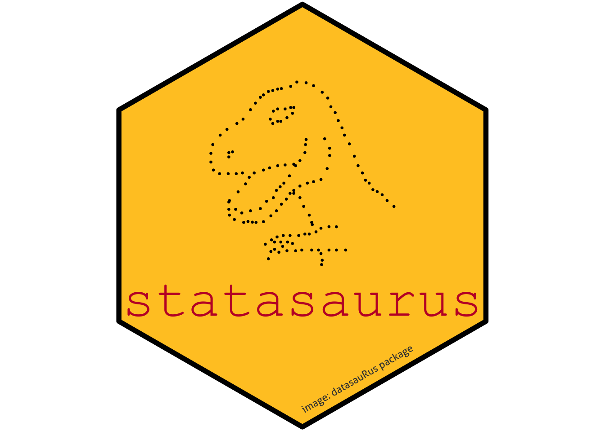

library(tidyverse)
library(magick)
library(hexSticker)
library(datasauRus)
#install.packages("datasauRus")
library(sysfonts)Stats-Hub logo
Creating the sticker
This is a short tutorial to easily create your own stickers!
Let’s give it a try for this group and find our identity! 🙃
00. Libraries
01. Prepare images
image_networking <- magick::image_read('../images/networking.png')
hub <- magick::image_read("../images/hub.png")
calendar <- magick::image_read('../images/calendar.png')
dinosaur <- magick::image_read('../images/dinosaur.png')
footprint <- magick::image_read('../images/footprint.png')
hack01 <- magick::image_read('../images/hackathon.png')
hack02 <- magick::image_read('../images/hackathon_02.png')
hack03 <- magick::image_read('../images/coding.png')
# datasauRus
datasaurus_df <- datasauRus::datasaurus_dozen %>% dplyr::filter(dataset == "dino")
dino_plot <- ggplot2::ggplot(datasaurus_df, aes(x = x, y = y)) +
geom_point(color = "#000000", size = 0.5) +
theme_void()02. Load fonts
fonts <- font_files()
# Check font paths
font_paths()[1] "/Library/Fonts" "/System/Library/Fonts"
[3] "/System/Library/Fonts/Supplemental" "/Users/acorrend/Library/Fonts" # Add the font we want
font_add(family = "Courier New",
regular = "/System/Library/Fonts/Supplemental/Courier New.ttf")03. Stickers
Defining colors palette
# define pallete
palette <- list('background' = '#FFC72A',
'font' = '#C20430',
'border' = '#000000',
'note' = 'grey25')
# Single Palette elements
background_color = '#FFC72A'
font_color = "#C20430"
border_color = "#000000"
note_color = "grey25"Statasaurus logo
statasaurus <- sticker(
# Title
package = "statasaurus",
# Title attributes
p_family = "Courier New",
p_color = font_color,
p_size = 16,
p_y = 0.6,
# Image
subplot = dino_plot,
# Image attributes
s_width = 0.95,
s_height = 0.95,
s_x = 1,
s_y = 1.2,
# Hexagon attributes
h_fill = background_color,
h_color = border_color,
h_size = 2,
# Add a link
url = "image: datasauRus package",
u_size = 3,
u_color = note_color,
# Add spotlight
spotlight = F,
# Spotlight attributes
# add some shadow to the pictures
l_y = 1,
l_width = 3,
l_height = 3,
l_alpha = 0.5,
# File saving
filename = "2024_logo.png",
dpi = 300,
white_around_sticker = FALSE
) 